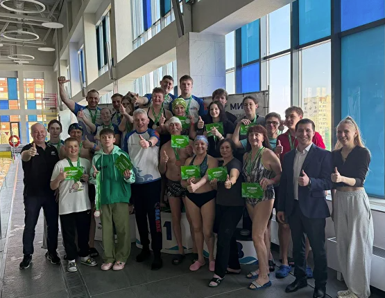
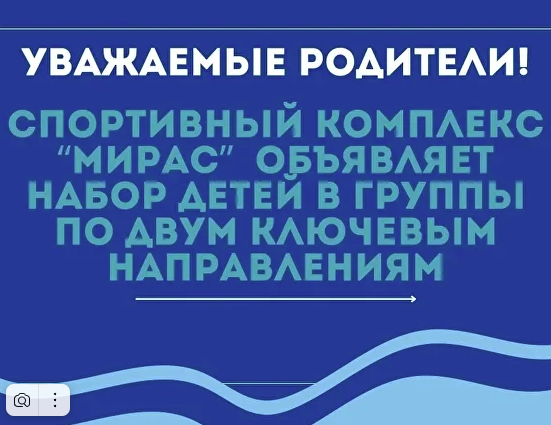

21 марта в бассейне спорткомплекса «Мирас» состоялись соревнования Открытые Командные соревнования по плаванию с сибайк, посвященные Году единства народов России.
В соревнованиях приняли участие спортсмены из городов: Альметьевск, Ярославль, Москва и Рыбинск. Стоит отметить , что именно г.Ярославль является родоначальником и центром развития движения сибайк в России. Соревнования объединили спортсменов разных возрастных категорий — от юношей до представителей взрослого поколения, что подтверждает доступность и универсальность данной дисциплины. Победу одержала команда города Ярославль, продемонстрировав высокий уровень подготовки. Особого внимания заслуживают результаты спортсменов, для которых данные старты стали дебютными. Несмотря на отсутствие соревновательного опыта в этой дисциплине, многие участники установили свои первые личные рекорды. Администрация СК «Мирас» выражает благодарность Федерации плавания г.Альметьевск, Управлению по физической культуре и спорта, Межрегиональной физкультурной организации Сибайк и лично её руководителю Александру Кучменко за помощь в организации соревнований
ПОДРОБНЕЕ →
Уважаемые родители! СК «Мирас» объявляет набор детей в группы по двум ключевым направлениям:
Уважаемые родители! СК «Мирас» объявляет набор детей в группы по двум ключевым направлениям: 1. Оздоровительная группа. Это направление подходит для детей любого уровня подготовки. Здесь мы создаем фундамент: • Обучение базовым навыкам. • Поэтапное освоение трех основных стилей плавания. • Общее физическое развитие. 2. Группа спортивной направленности. • Подготовка к соревнованиям: Систематические тренировки, направленные на развитие выносливости, силы и скоростных качеств. • Участие в соревнованиях различного уровня — от внутриклубных до региональных. • Анализ результатов: Работа тренера по анализу техники и прогресса спортсмена. • Перспектива попасть в Спортивную школу олимпийского резерва. 90% воспитанников наших групп попадают в СШОР Тренировки ребенка — это часть жизни всей семьи, поэтому создали максимально комфортные условия не только для детей, но и для родителей: 🎁 Бонусы: • При покупке абонемента на занятия с тренером на второго и последующих детей предоставляется скидка 7% каждому! • Скидка 10% на абонемент в бассейн или тренажерный зал для родителей. • Комфортная зона ожидания: на территории комплекса работает кафе, установлены вендинговые аппараты с напитками и перекусами. Узнать расписание и записаться в группу можно: 📍 На ресепшн нашего комплекса 📞 По телефону: 8(8553) 44-05-11
ПОДРОБНЕЕ →